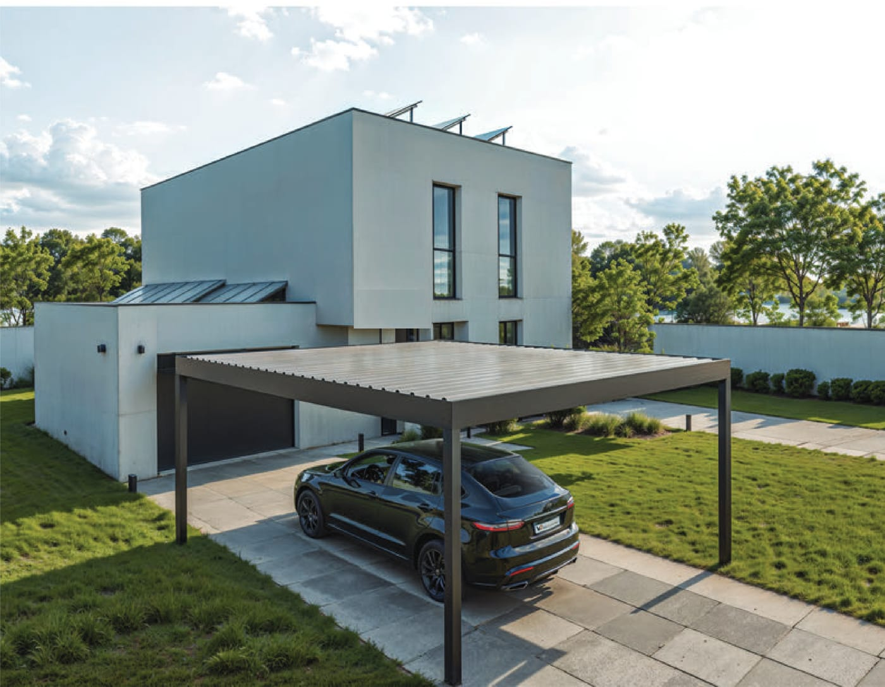
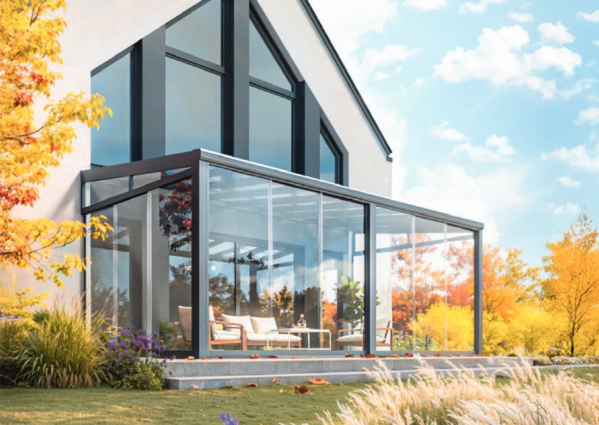
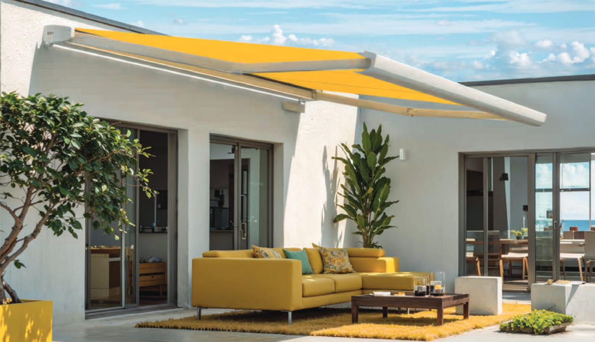
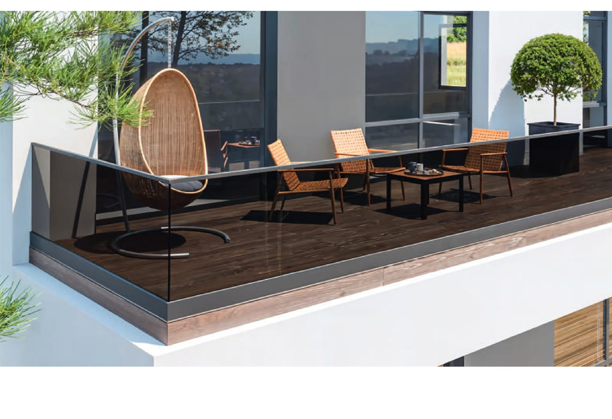
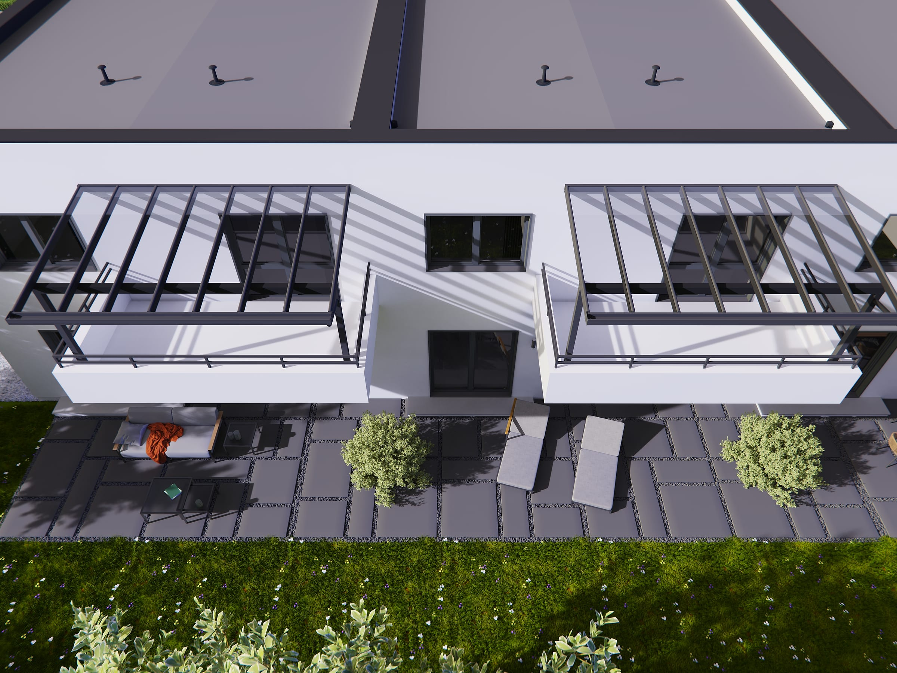
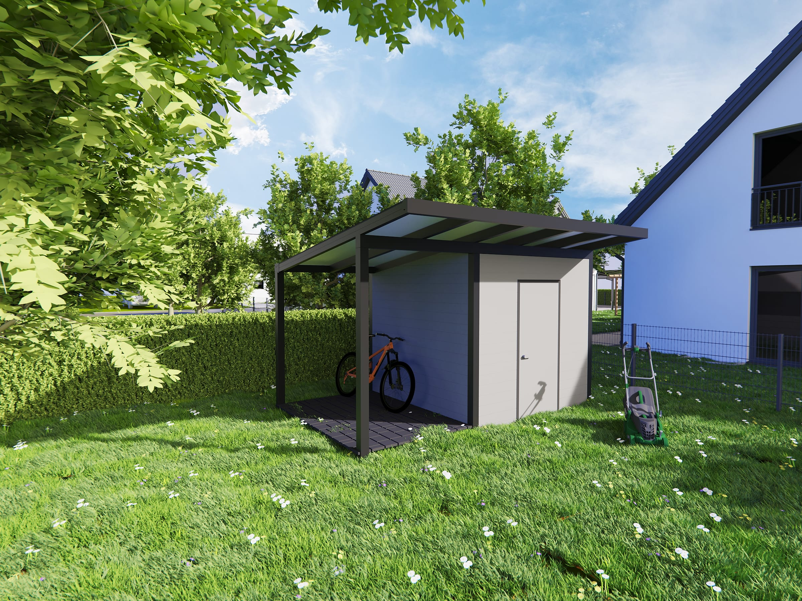

Terrassenüberdachung
Wetterschutz aus Aluminium und Glas – klassisch geneigt oder als Flachdach.
Terrassenüberdachung ansehenTerrassenüberdachung, Carport, Lamellendach, Wintergarten, Markisen und mehr – alle Alu-Außensysteme nach Maß, geplant und montiert aus einer Hand.
Wetterschutz aus Aluminium und Glas – klassisch geneigt oder als Flachdach.
Terrassenüberdachung ansehen

Drehbare Alu-Lamellen: Sonne, Schatten und Regenschutz auf Knopfdruck.
Pergola & Lamellendach ansehen
Glasdach plus Schiebewände – die Terrasse wird zum Wintergarten.
Kaltwintergarten ansehen
Fünf Markisen-Typen mit Funkmotor und über 50 Stoffen.
Sonnenschutz & Markisen ansehen

Vordächer für die Haustür – als Glasvordach oder Alu-Kassette.
Eingang & Vordächer ansehen
Balkonüberdachung mit Glasdach und Fassadenverkleidung Deco Wall.
Balkon & Fassade ansehen
Gartenhaus mit Fahrradüberdachung sowie Zaun- und Sichtschutzpaneele.
Garten & Außenbereich ansehenVom ersten Beratungsgespräch bis zur fertigen Montage bekommen Sie alles aus einer Hand.
Exakt auf Ihre Situation geplant und gefertigt.
Langlebige, wartungsarme Aluminiumprofile.
Beratung, Fertigung, Montage – ein Ansprechpartner.
Rostfrei, pflegeleicht und langlebig.
Fordern Sie jetzt Ihr kostenloses, unverbindliches Angebot an – Antwort innerhalb von 24 Stunden.